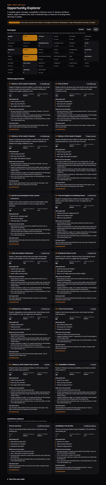

Views, saves and sales sit in separate places. Nobody explains what they say about the next decision.
Tools show confident charts and never say what was counted and what was only a guess.
Customers say what they are missing in comments, in English and Filipino. Owners never see it.

See where demand has no listed supply.
Every score shows its evidence and its doubt.
Each gap ends with a cheap next step, or says “insufficient evidence”.